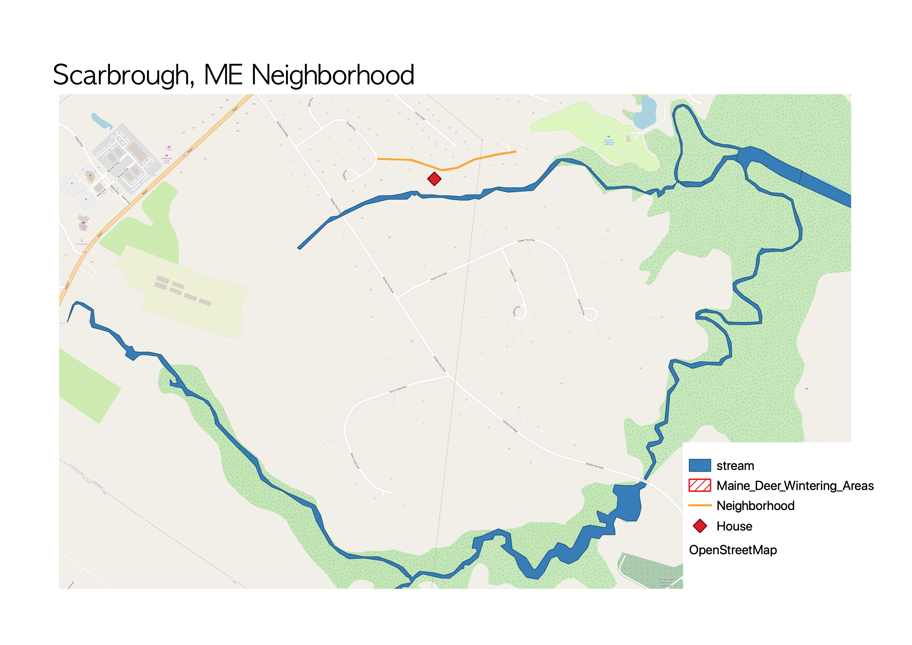

GIS Fundementals
Creating Point, Line, & Polygon Vector Layers
This is the first map I ever made. It was created in QGIS. This map shows my ability to create point, line, and polygon vector layers.
Map Layouts
This is a more recent map I made showing the distrubtion of 7 invasive species throughout the NC triangle. This show my ability to create aesthetic and informational map layouts.
Choropleth
QGIS.

Georeferencing
A 1993 geoferenced map of Chapel Hill created in QGIS